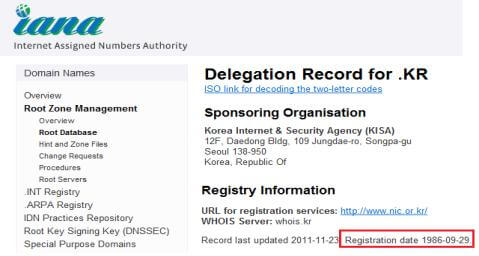

다자간인터넷거버넌스협의회는
다양한 이해관계자가 인터넷거버넌스에 참여할 수 있도록 노력하고 있습니다.
용어집

- 자료실
- 용어집
ㄱ
경제협력개발기구 (Organisation for Economic Co-operation and Development)
- ’60년 경제사회 부문별 공통의 문제에 대한 최선의 정책방향을 모색하고 상호의 정책을 조정함으로써 공동의 안정과 번영을 도모하기 위해 설립된 기구. 개방된 시장경제와 다원적 민주주의라는 가치관을 공유하는 국가 간 경제사회 정책협의체로 회원국은 34개국이 있으며,(’13년 5월 기준) 한국은 1996년 12월 12일 회원으로 가입함
국제교육과학문화기구 (United Nations Educational, Scientific and Cultural Organization)
- ’46년 교육, 과학, 문화의 보급 및 교류를 위해 설립된 UN 국제교육과학문화기구. 대중교육과 문화보급, 지식의 유지·증대 및 전파, 세계유산의 보호 등의 활동을 주로 하며, 195개 정회원국과 8개 준회원국(투표권 없음)이 가입되어 있음(※ 한국은 1950년에 가입했고, 1987년 제24회 총회에서 집행위원국에 선출된 바 있음)
국제인터넷주소기구(ICANN)
- 1998년 美상무성과의 협약에 의해 설립된 비영리민간법인으로, 도메인, IP주소, DNS 등 전 세계 인터넷주소자원에 대한 글로벌 정책 수립 및 총괄적 관리를 수행
(홈페이지 : http://www.icann.org)
※ 국제인터넷주소기구(ICANN) 조직도
국제전기통신세계회의 (World Conference on International Telecommunications)
- 전권회의와 함께 ITU(국제전기통신연합) 최고의결기관 중 하나로, 국제전기통신규칙(ITR, Int’l Telecommunication Regulation) 개정에 대한 논의가 이루어짐. 2012년 WCIT가 ‘12.12.3~14 아랍에미레이트 두바이에서 개최되어 국제전기통신규칙 개정안을 채택함(2015.1.1. 발표)
ㄴ
ㄷ
도메인
- 인터넷에서 인터넷 프로토콜 주소를 사람이 기억하기 쉽도록 하기 위하여 만들어진 것(인터넷주소자원에관한법률 제2조(정의) 제1항)
- 영문 2자리 국가코드(ISO 3166-1 근거)를 사용한 국가도메인(ccTLD)과 등록인의 목적에 따라 사용되는 일반도메인(gTLD)으로 구분
도메인 등록대행자
- 도메인 관리업무의 일부를 대행하기 위하여 도메인 등록관리기관 및 ICANN이 선정한 사업자로, 도메인이름 등록․등록정보 변경, 분쟁처리, 수수료 청구․수납, 민원응대 및 기타 등록대행과 관련하여 필요한 업무를 수행함
※ 선정근거
– KISA : 인터넷주소자원에관한법률 제2조제6호 및 제14조제1항, 도메인이름관리준칙 제15조 및 제15조의2
– ICANN : gTLD Registrar 인가 계약(RAA, Registrar Accreditation Agreement)
도메인 등록관리기관
- 국제인터넷주소기구(ICANN)로부터 TLD(최상위도메인)에 대한 관리 권한을 위임받은 기관(예 : KISA, 베리사인, 닷아시아, CNNIC)으로, 위임받은 TLD에 대한 등록관리 정책 수립, 도메인이름 등록관리․도메인 등록정보 업데이트․도메인이름 등록정보 검색(Whois) 등 도메인이름 관련 시스템 및 DNS 운영 등의 역할 수행
※ 도메인별 등록관리기관은 국제인터넷주소기구 홈페이지 ‘http://www.iana.org/domains/root/db’에서 조회
 참고 :「.kr」위임 기록 조회 화면
ㄹ
ㅁ
망식별번호(AS번호, Autonomous System Number)
- 인터넷상에서 국제표준방식에 의하여 독자적인 네트워크를 구축하고 이를 구분하는 번호 식별 체계(망식별번호관리준칙 제2조)
– 2-byte AS번호 : 0 ~ 65535 (65,536개)
– 4-byte AS번호 : 65,536 ~ 4,294,967,295 (4,294,901,760개)
※ AS(Autonomous System) : 동일한 정책으로 하나의 관리자에 의하여 운영되는 네트워크, 즉 한 회사나 단체에서 관리하는 라우터 집단
AS번호 : 각각의 AS를 식별하기 위한 인터넷상의 고유한 숫자
ㅂ
ㅅ
세계전기통신/ICT정책포럼 (World Telecommunication/Information and Communication Technology Policy Forum)
- ‘94년 ITU가 설립한 국제포럼으로, ITU 회원(정부, 산업, 전세계 규제 커뮤니티)들이 한자리에 모여 급변하는 ICT환경에서의 주요정책 이슈에 대한 의견을 교환하는 회의. WTPF는 규범적 규제성격의 결과물을 창출하지 않으나, 합의(컨센서스)를 통해 오피니언(Opinions)을 채택하며 ITU 전권회의(PP) 등에서 관련 논의 시 참고·근거자료로 활용하고 있음
※ 오피니언 : 전기통신/ICT분야의 정책방향에 대한 의견으로 회원국과 사무국에게 특정 분야에 대한 연구와 협력에 대한 방향 제시
ㅇ
아·태지역 국가도메인 협의체 (Asia-Pacific Top Level Domain Association)
- ’98년 설립된 아·태지역 국가도메인 관리기관들의 협의체. 우리나라를 포함하여 40여 개국 국가도메인 관리기관이 회원으로 참여하여 국제인터넷주소기구(ICANN)의 주요 논의 의제들에 대해 아태지역 국가들의 입장을 정리하여 대변하고, 국가도메인 관련 정보를 공유함
아·태지역 인터넷거버넌스 포럼 (Asia-Pacific Internet Governance Forum)
- 아·태지역의 인터넷 이용급증에 따라 지역적 특성에 맞는 이슈 발굴 및 국제 인터넷 거버넌스 변화대응을 위해 ‘09년 설립된 포럼. 정보사회세계정상회의(WSIS) 결과에 따라 ‘06년에 설립된 IGF(UN산하 국제포럼)와는 상하 관계가 아닌 수평적 협력 관계
유럽연합 (European Union)
- ’93년 유럽 내 단일 시장 구축과 단일 통화 실현으로 유럽의 경제, 사회 발전 촉진, 공동방위정책을 포함하는 공동외교안보정책의 수립·이행으로 국제 무대에서 유럽의 이해 제고, 유럽시민권제도 도입으로 회원국 국민의 권리와 이익보호 및 ‘자유·안전·정의’를 공동 영역으로 확대 발전 등을 위해 설립. 회원국은 27개이며(’13년 5월 기준), 각료이사회, 정상회의, 집행위원회, 유럽의회, 유럽사법재판소, 유럽회계감사원 등의 기구를 두고 있음
- ’93년 유럽 통합 관련 조약 수호 및 유럽연합의 행정부 역할, 유럽연합 관련 각종 정책 입안 및 유럽연합의 이익 수호를 위해 설립된 위원회.
- UN 사무국의 일부로, 회원국들에게서 자금을 받아 운영됨. 1997년 현재의 형태가 갖춰짐. 경제, 사회, 환경 관련 자료 및 정보를 생성하고 분석하여 회원국들이 문제를 인지하고 정책을 수립할 수 있도록 돕고, 세계 범위에서 나타나는 문제에 대해 국가간 기구에 속한 회원국들간 협상을 촉진하며, UN 회의 및 정상회의 등에서 개발된 정책틀을 국가단위에서 시행할 수 있도록 기술 및 관련 능력 배양 지원하는 역할을 수행
- ’64년 선진국과 후진국간 무역 불균형 시정 및 남북문제를 해결을 위해 설립된 협의회. 회원국의 경제개발 및 무역촉진, 다자간 무역규범의 협상 및 채택을 위한 논의
- IP주소를 역으로 나열하여 뒤에 “in-addr.arpa”라는 특수 도메인을 붙인 것.
- 네트워크 운영자가 IP주소에 해당하는 도메인이름을 조회하거나 메일서버 등에서 도메인이름을 이용하여 IP주소를 인증하는 목적으로 사용됨
※ dig 프로그램 이용(리눅스) : dig 51.50.30.202.in-addr.arpa ptr 명령어 입력
※ 메일 서버에서 이메일을 전달받으면 인버스 도메인을 이용하여 발송 IP주소에 해당하는 도메인이름을 조회, 이것이 메일 송신인의 도메인이름과 일치하지 않는 경우 스팸메일로 간주
- 인터넷과 거버넌스의 합성어로, 1990년대 중반 하버드 버크만 센터의 ‘하버드 정보기반 프로젝트’(Harvard Information Infrastructure Project) 연구원들에 의해 ‘루트서버 운영, IP주소 할당 및 DNS 운영 등 인터넷주소자원에 대한 관리체계를 의미하는 것’으로 처음 사용되었으며, 최근에는 ‘인터넷 기술을 바탕으로 정치, 경제, 사회, 문화 등 사회구조를 총체적으로 관리하는 시스템’으로 의미가 확대됨
- WGIG(Working Group on Internet Governance)의 정의
– 정부, 민간부문 및 시민사회가 각자의 역할을 가지고 인터넷의 발전과 활용을 위해 구체화된 공통의 원칙, 규범, 규칙, 의사결정절차 및 프로그램을 개발하고 적용하는 것
* WGIG(Working Group on Internet Governance) : WSIS(정보사회정상회의) 1차 회의(2003.12) 이후 UN 주도하에 인터넷 거버넌스의 정의를 확립하기 위하여 40명의 전문가로 구성된 워킹그룹. 2차 회의(2005.11)에서 인터넷거버넌스의 정의 및 IGF(Internet Governance Forum) 창설을 합의한 이후 활동 없음
- 인터넷주소자원에 관한 법률(제16조~24조)에 의거하여 설립된 위원회로, 도메인이름을 둘러싼 등록인과 상표권 등 권리자 간의 분쟁을 조정함. 위원회는 법조계․학계․유관기관 전문가 24명으로 구성되며, 조정부는 1인 또는 3인으로 구성됨.
(홈페이지 : http://www.idrc.or.kr)
유럽연합 집행위원회 (European Commission)
유엔경제사회분과 (United Nations Department of Economic and Social Affairs)
유엔무역개발협의회 (United Nations Conference on Trade and Development)
인버스 도메인
인터넷거버넌스
인터넷주소분쟁조정위원회
ㅈ
ㅊ
ㅋ
ㅌ
ㅍ
ㅎ
한글키워드서비스
- 인터넷 이용자가 주소창에 단어를 입력하면 홈페이지로 연결해 주는 서비스. 현재, 단어형(꽃배달)과 계층형(꽃배달.회사) 형태로 서비스되고 있음
– ‘꽃배달’ 단어를 ‘www.flower.kr’ 도메인으로 연결되도록 사전에 등록한 경우, 주소창에 ‘꽃배달’을 입력하면 ‘www.flower.kr’ 홈페이지로 연결
A
AfriNIC (African Network Information Center)
- 아프리카 지역의 IP주소 할당 및 정보 서비스 제공업무를 수행하는 비영리 기구. ICANN의 국제 IP주소 관련 정책에 참여
ALAC (At-Large Advisory Committee)
- 일반 최상위 도메인, ICANN 이사회, 그리고 ICANN의 여러 다른 기관에 관한 ICANN 이사회 정책에 추천의 역할을 함
AoC (Affirmation of Commitments)
- 의무확인서, ICANN은 ’09년 10월 1일 ICANN 설립 이래 지속되어 온 美 상무성과의 기존 계약을 종료하고, 인터넷주소체계 관리에 자율성을 부여하는 새로운 형태의 협약을 체결
APIRA (Asia Pacific Internet Research Association)
- 아·태 지역의 인터넷 통계정보 교류, 조사기법 연구 촉진, 국가 간 협력 등을 통해 인터넷의 발전을 도모하기 위한 ’03년에 설립된 비영리 조직
APNIC (Asia Pacific Network Information Center)
- 아·태지역의 IP주소 할당 및 정보 서비스 제공업무를 수행하는 비영리 기구. ICANN의 국제 IP주소 관련 정책에 참여하며, 1993년 설립
APrIGF (Asia-Pacific Internet Governance Forum, 아·태지역 인터넷거버넌스 포럼)
- 아·태지역의 인터넷 이용급증에 따라 지역적 특성에 맞는 이슈 발굴 및 국제 인터넷 거버넌스 변화대응을 위해 ‘09년 설립된 포럼. 정보사회세계정상회의(WSIS) 결과에 따라 ‘06년에 설립된 IGF(UN산하 국제포럼)와는 상하 관계가 아닌 수평적 협력 관계
APTLD (Asia-Pacific Top Level Domain Association, 아·태지역 국가도메인 협의체)
- ’98년 설립된 아·태지역 국가도메인 관리기관들의 협의체. 우리나라를 포함하여 40여 개국 국가도메인 관리기관이 회원으로 참여하여 국제인터넷주소기구(ICANN)의 주요 논의 의제들에 대해 아태지역 국가들의 입장을 정리하여 대변하고, 국가도메인 관련 정보를 공유함
ARIN (American Registry for Internet Numbers)
- 북아메리카 지역의 IP주소 할당 및 정보 서비스 제공업무를 수행하는 비영리 기구. ICANN의 국제 IP주소 관련 정책에 참여
B
BCP (Business Continuity Planning)
- 재난 발생 시 비즈니스 연속성을 유지하기 위한 방법론. 재해나 재난으로 정상적인 운용이 어려운 데이터 백업과 같은 단순복구뿐 아니라 고객 서비스 지속성 보장, 핵심 업무기능을 지속하는 환경을 조성해 기업가치를 최대화하는 것을 지칭
C
ccNSO (country code Names Supporting Organization)
- ccTLD 커뮤니티의 합의된 의견을 도출하고 ccTLD 관련 주요정책을 개발하여 ICANN 이사회에 권고하는 역할을 수행하는 기구로 ’04년 3월 형성됨
ccTLD (country code Top Level Domain)
- 국가최상위도메인으로 ISO-3166-1(국가와 부속영토 명칭 부호) 표준에 따라 할당됨. 영문은 「.kr」, 한글은 「.한국」이 우리나라의 국가도메인임. 현재 국가도메인은 총 277개이며, 이 중 영문국가도메인은 247개, 다국어국가도메인은 30개임(20개국)
D
DDoS (Distributed Denial Of Service)
- 네트워크로 연결되어 있는 많은 수의 호스트들의 패킷을 범람시킬 수 있는 DOS 공격용 프로그램을 분산 설치하여 이들이 서로 통합된 형태로 공격 대상 시스템에 대해 성능 저하 및 시스템 마비를 일으키는 기법
DNS [Domain Name System(service, server)]
- 특정 네트워크에 속한 특정 호스트에 접속하기 위해 일일이 숫자로 된 IP 주소를 기억하지 않고 도메인이름만으로도 가능하게 하기 위하여 도메인이름을 IP 주소로 전환시켜 주는 시스템 혹은 서비스
DNSSEC (DNS Security Extensions)
- DNS서버 내 도메인 접속정보 위ㆍ변조 방지를 위하여 공개키 기반구조(PKI: Public-Key Infrastructure)를 적용하여 서명ㆍ검증하는 DNS 보안기술로서 현재 국제 인터넷기술표준화 기구인 IETF(Internet Engineering Task Force)에서 다루고 있음
E
ETSI (European Telecommunications Standards Institute)
- 유럽통신표준연구소로 정보통신 표준화 및 ICT 사업안내, 기술정보 등을 제공하는 기관
EC (European Commission, 유럽연합 집행위원회)
- ’93년 유럽 통합 관련 조약 수호 및 유럽연합의 행정부 역할, 유럽연합 관련 각종 정책 입안 및 유럽연합의 이익 수호를 위해 설립된 위원회.
EU (European Union, 유럽연합)
- ’93년 유럽 내 단일 시장 구축과 단일 통화 실현으로 유럽의 경제, 사회 발전 촉진, 공동방위정책을 포함하는 공동외교안보정책의 수립·이행으로 국제 무대에서 유럽의 이해 제고, 유럽시민권제도 도입으로 회원국 국민의 권리와 이익보호 및 ‘자유·안전·정의’를 공동 영역으로 확대 발전 등을 위해 설립. 회원국은 27개이며(’13년 5월 기준), 각료이사회, 정상회의, 집행위원회, 유럽의회, 유럽사법재판소, 유럽회계감사원 등의 기구를 두고 있음
F
G
GAC (Governmental Advisory Committee, 정부자문위원회)
- 국가 정부들, 다국간 정부기구들, 조약기구 및 경제 공동체들이 임명한 대표자들로 구성된 자문위원회로서 정부 관심사안에 대해 ICANN 이사회에 자문역할을 수행하고 정책을 권고
gTLD (generic Top Level Domain)
- 일반최상위도메인. 도메인이름시스템(DNS) 상에서 최상위도메인(TLD)의 하나로, com/net과 같이 누구나 등록할 수 있는 최상위도메인과 .gov(미국 정부기관)와 같이 등록 대상에 제한이 있는 최상위도메인이 있음. 현재까지 총 23개가 생성된 바 있으나 ICANN 신규 gTLD 도입 정책에 따라 ’12년부터 IDN(다국어도메인)을 포함한 다수의 도메인이 생성될 예정
H
HTML5 (HyperText Markup Language 5)
- W3C에서 만들고 있는 차세대 웹표준으로서 마이크로소프트, 모질라, 애플, 구글, 오페라 등 모든 웹브라우저 벤더가 참여하고 있는 산업 표준. ’04년 WHATWG의 초안으로 부터 시작된 이 표준안은 시맨틱 마크업, 편리한 웹폼 기능, 리치 웹 애플리케이션 API 들을 담고 있으며 ’07년부터 W3C HTML W/G에서 표준안이 만들어지고 있음.
I
IAB (Internet Architecture Board)
- IETF 및 ISOC(인터넷학회)의 위원회로써 인터넷 발전에 관련된 기술적·정책적인 문제를 다룸
IANA (Internet Assigned Numbers Authority)
- 인터넷에 접속하기 위한 인터넷 프로토콜(IP)의 전 세계적 주소를 관리하는 기구. ICANN이 미 상무부와의 계약에 의해 업무 수행
ICANN (Internet Corporation for Assigned Names and Numbers, 국제인터넷주소기구)
- 1998년도에 창설된 전 세계 인터넷 주소자원관리기구로서 인터넷 관련 비즈니스, 기술계, 학계 및 이용자 단체 등으로 구성된 비영리 기구
IEC (International Electrotechnical Commission)
- 국제 전기 표준 회의로 전기, 전자, 통신 및 원자력 등의 분야에서 각국의 규격·표준의 조정을 행하는 국제기구. 1906년에 설립되어 1947년 이후는 ISO의 전기·전자 부문 담당
IETF (Internet Engineering Task Force)
- 국제 인터넷 표준화 기구로 인터넷의 운영, 관리 및 개발에 대해 협의하고 프로토콜과 구조적인 사안들을 분석하는 기구. 인터넷 아키텍쳐 위원회(IAB)의 산하기구로 망설계자, 관리자, 연구자, 망 사업자 등으로 구성된 개방된 공동체
IGF (Internet Governance Forum)
- 정보사회세계정상회의(WSIS, ’05. 11월) 합의에 따라, ’06년에 설립된 UN산하 국제포럼으로 주요 인터넷자원, 접근성, 다양성, 개방성 및 보안 등 인터넷 현안을 논의하기 위해 다양한 이해관계자 참여
IESG (Internet Engineering Steering Group)
- 인터넷 표준의 최종 기술 검토를 제공하고 IETF의 일상 관리를 수행하고 있는 기구
IoT (Internet of Things)
- 사물 기반 인터넷의 줄임말로 센서와 지능이 소비자 장치 또는 물리적 재산과 같은 물리적 아이템에 적용되고 이런 객체들이 인터넷에 연결됨에 따라 인터넷이 어떻게 확대될 것인가를 묘사하는 개념
IP주소 (Internet Protocol 주소)
- 인터넷에서 통신을 하기 위해 컴퓨터와 통신장비에 부여하는 고유한 주소로 IPv4 주소와 차세대 인터넷주소인 IPv6로 구분됨.
(인터넷에 연결된 모든 컴퓨터에는 전 세계에서 유일한 IP주소가 할당되므로 인터넷 이용자를 추적하는데 IP주소를 이용함)
※ IP주소 등록정보 조회 사이트 : http://whois.kisa.or.kr
IPv4 주소 (Internet Protocol version 4 주소)
- 0.0.0.0부터 255.255.255.255까지 숫자의 조합으로 구성된 32비트 주소.
네트워크 주소와 호스트 주소로 구성되며, 슬래시(/) 뒤의 숫자를 통해 네트워크 주소의 길이를 구분함(IP주소를 2진수 표기법으로 변환했을 때 첫째 자리부터 슬래시 뒤 숫자 자리까지가 네트워크 주소)
※ 가능한 IP주소 개수 : 약42.9억개 (256×256×256×256=4,294,967,296개)
IPv6 주소 (Internet Protocol version 6 주소)
- 32비트 IPv4 주소를 4배 확장한 128비트 차세대 IP주소
ISO (International Organization for Standardization)
- 국제표준화기구로 여러 나라의 표준 제정 단체들의 대표들로 이루어진 국제기구로 1947년에 출범하였고, ISO가 정한 규격은 국제협약이나 국제표준 제정을 통해 제도화됨
ISOC (Internet Society)
- 인터넷을 국제적으로 대표하고, 기술개발이나 운용 관리사의 제반 문제를 총괄하는 조직으로, 1992년부터 활동을 개시하고 있고 지금까지 여러 가지 경위로 창설되어 존재하고 있는 인터넷 관련 조직을 ISOC이 총괄하는 형태로 편성
ITU (International Telecommunication Union)
- 국제 전기통신 연합으로 UN 산하기구로 전기통신의 개선과 효율적인 사용을 위해 국제협력 증진 및 전기통신 업무의 능률 향상·이용증대·보급 확대를 위한 기술적 수단의 발달과 효율적 운용을 목적으로 하는 정부간 국제기구 ITU-T, ITU-R, ITU-D 부문으로 이루어져 있음
– ITU-T(Telecommunication Standardization Sector) : 전기통신 표준화 담당
– ITU-R(Radio-communication Sector) : 전파통신 관리 담당
– ITU-D(Telecommunication Development Sector) : 전기통신 개발 담당
6NGIX (IPv6 Next Generation Internet Exchange)
- 국내·외의 차세대 IPv6 망을 서로 연동시키기 위한 IPv6기반의 인터넷 연동센터로 초고속 정보통신 네트워크 기술, 초고속 응용 서비스 및 관련 장치 연구 개발 환경을 제공하여 국내 산·학·연기관이 공동으로 참여하는 기술개발 산업을 독려하고, 국내외 차세대 네트워크 산업과의 연계를 통한 공동 연구기반 조성을 목적으로 함. ’01년 10월부터 서비스를 개시하였으며 미국(6TAP), 일본(NSPIXP6)과 더불어 IPv6기반의 차세대 인터넷 설비를 갖추게 되어 국내 인터넷 정보 제공자(ISP)들이 IPv6 기반의 인터넷을 더욱 효율적이며 경제적으로 구축 가능하게 됨
J
K
L
LACNIC (Latin American and Caribbean Network Information Center)
- 라틴아메리카 및 카리비안 지역의 IP주소 할당 및 정보 서비스 제공업무를 수행하는 비영리 기구. ICANN의 국제 IP주소 관련 정책에 참여
LTE (Long Term Evolution)
- 3세대 이동통신(3G)을 ‘장기적으로 진화’시킨 기술이라는 뜻에서 붙여진 명칭으로 WCDMA(광대역부호분할다중접속)와 CDMA(코드분할다중접속)2000으로 대별되는 3세대 이동통신과 4세대 이동통신(4G)의 중간에 해당하는 기술이라 하여 3.9세대 이동통신(3.9G)라고도 칭함. 와이브로 에볼루션과 더불어 4세대 이동통신 기술의 유력한 후보 가운데 하나로 꼽힘
M
MAG (Multistakeholder Advisory Group)
- UN 사무총장이 개설한 자문기구로서, 인터넷거버넌스포럼(IGF)를 지원하는 것이 목적임. 정부·민간·사회 부문에서 다양한 분야에 종사하는 56명의 구성원으로 조직되어 있으며, 일년에 세 번 제네바에 있는 Palais des Nations에서 회의를 개최함
M2M (Machine to Machine)
- ‘사람과 사물’, ‘사물과 사물’간 지능통신 서비스를 언제 어디서나 안전하고 편리하게 실시간 이용할 수 있는 미래 방송통신 융합 ICT인프라로의 진화를 의미하며 적용분야로는 텔레매틱스, 운동, 내비게이션, 스마트 계량기, 자동판매기, 보안서비스 등이 있음
N
NIR (National Internet Registry)
- 국가별 인터넷주소자원 관리기관. KISA/KRNIC(한국), JPNIC(일본), CNNIC(중국), TWNIC(대만), VNNIC(베트남), APJII(인도네시아), NIXI(인도)이 관리
NIST (National Institute of Standards and Technology)
- 1901년부터 1988년까지 국립표준(NBS, National Bureau of Standards)이라고 알려진 측정 표준 실험실로 미국 상무부 산하의 비규제 기관
O
OARC (Operations, Analysis and Research Center)
- DNS의 안정적인 운영을 위하여 ISC(Internet Software Consortium)에서 ’03년에 공식 발족한 DNS 운영·분석 연구기관
OASIS (Organization for the Advancement of Structured Information Standards)
- SGML, XML 및 HTML 등과 같은 정보 형식에 있어 제품 독립적인 표준 채택을 촉진하기 위한 목적으로 설립된 세계적인 비영리 컨소시엄
OECD (Organisation for Economic Co-operation and Development, 경제협력개발기구)
- ’60년 경제사회 부문별 공통의 문제에 대한 최선의 정책방향을 모색하고 상호의 정책을 조정함으로써 공동의 안정과 번영을 도모하기 위해 설립된 기구. 개방된 시장경제와 다원적 민주주의라는 가치관을 공유하는 국가 간 경제사회 정책협의체로 회원국은 34개국이 있으며,(’13년 5월 기준) 한국은 1996년 12월 12일 회원으로 가입함
OID (Object IDentifier)
- 전기통신 및 정보처리분야에서 객체(SW, HW, 문서, 알고리즘 등)들을 구분하기 위한 최상위 식별 국제 표준 체계
OPMD (One Person Multi Device)
- 일종의 Smart Sharing 서비스로, 한 사람이 여러 종류의 기기를 이용하여 통신 서비스를 받는 것을 말함. 예를 들어 유료 무선랜 서비스를 이용하는 한 고객이 단일 요금제를 이용하여 스마트폰으로도, 노트북으로도 무선랜 서비스를 이용하는 것을 의미. 즉, ID 하나에 한 장치의 MAC을 허용하는 것이 아니라 여러 장치들의 MAC을 허용함으로써 ID가 공유되는 것을 허용하는 개념
P
Q
R
RFC (Request For Comments)
- 미국의 인터넷 아키텍처 위원회(IAB)가 인터넷에 관한 조사, 제안, 기술, 소견 등을 공표한 온라인 공개 문서 시리즈
RFID (Radio Frequency IDentification)
- 전파 신호를 통해 비접촉식으로 사물에 부착된 얇은 평면 형태의 태그를 식별하여 정보를 처리하는 시스템
RIPENCC (Reseaux IP Europeans Network Coordination Center)
- 유럽 및 아프리카 지역의 IP주소 할당 및 정보 서비스 제공업무를 수행하는 기구. ICANN의 국제 IP주소 관련 정책에 참여
RIR (Regional Internet Registry)
- 대륙 단위의 IP주소 할당/관리를 담당하는 인터넷 등록 기구
RSSAC (Root Server System Advisory Committee)
- 루트 이름 서버의 도메인 이름 시스템 (DNS) 하드웨어 용량, 운영 체제, 이름 서버 버전, 네트워크 연결, 물리적 환경뿐만 아니라 보안 측면을 포함한 시스템 환경을 검토
S
SNS (Social Network Service)
- 1인 미디어, 1인 커뮤니티, 정보 공유 등을 포괄하는 개념이며, 참가자가 서로에게 친구를 소개하여 친구관계를 넓힐 것을 목적으로 개설된 커뮤니티형 웹사이트
T
U
UNCTAD (United Nations Conference on Trade and Development, 유엔무역개발협의회)
- ’64년 선진국과 후진국간 무역 불균형 시정 및 남북문제를 해결을 위해 설립된 협의회. 회원국의 경제개발 및 무역촉진, 다자간 무역규범의 협상 및 채택을 위한 논의
UNDESA (United Nations Department of Economic and Social Affairs, 유엔경제사회분과)
- ’UN 사무국의 일부로, 회원국들에게서 자금을 받아 운영됨. 1997년 현재의 형태가 갖춰짐. 경제, 사회, 환경 관련 자료 및 정보를 생성하고 분석하여 회원국들이 문제를 인지하고 정책을 수립할 수 있도록 돕고, 세계 범위에서 나타나는 문제에 대해 국가간 기구에 속한 회원국들간 협상을 촉진하며, UN 회의 및 정상회의 등에서 개발된 정책틀을 국가단위에서 시행할 수 있도록 기술 및 관련 능력 배양 지원하는 역할을 수행
UNESCO (United Nations Educational, Scientific and Cultural Organization, 국제교육과학문화기구)
- ’46년 교육, 과학, 문화의 보급 및 교류를 위해 설립된 UN 국제교육과학문화기구. 대중교육과 문화보급, 지식의 유지·증대 및 전파, 세계유산의 보호 등의 활동을 주로 하며, 195개 정회원국과 8개 준회원국(투표권 없음)이 가입되어 있음(※ 한국은 1950년에 가입했고, 1987년 제24회 총회에서 집행위원국에 선출된 바 있음)
V
VoIP (Voice over Internet Protocol)
- 인터넷 텔레포니의 핵심기술로 지금까지 기존 전화망을 통해 이루어졌던 음성 서비스를 IP(Internet Protocol)을 사용하여 다양한 서비스로 제공하는 기술
W
WCIT (World Conference on International Telecommunications, 국제전기통신세계회의)
- 전권회의와 함께 ITU(국제전기통신연합) 최고의결기관 중 하나로, 국제전기통신규칙(ITR, Int’l Telecommunication Regulation) 개정에 대한 논의가 이루어짐. 2012년 WCIT가 ‘12.12.3~14 아랍에미레이트 두바이에서 개최되어 국제전기통신규칙 개정안을 채택함(2015.1.1. 발표)
W3C (World Wide Web Consortium)
- www의 발전을 위해 구성된 전 세계적 산업 컨소시엄으로 HTML, CSS, XML 등의 www에 관련된 표준화 활동과 www 개발자/사용자를 위한 정보공유?통신기술에 대한 개발 등을 하고 있고, 국내에서는 www-KR이 가입하여 활동 중
WIPO (World Intellectual Property Organization)
- 1970년 설립, 세계지식재산권을 관장하는 UN 전문기구. 1999년 12월 인터넷주소 분쟁조정기구가 WIPO내 설치되어 일반최상위도메인(.com, .net 등 23개) 일부 국가도메인(.fr(프랑스), .br(브라질) 등 65개)을 대상으로 도메인이름과 관련된 분쟁을 다루고 있음
WSIS (World Summit on the Information Society)
- 정보사회의 혁신과 영향을 논의함으로써 이에 대한 실제적인 조정과 대응 방안을 모색하는 정보사회 세계 정상회의
WSIS+10 (World Summit on the Information Society+10)
- 유네스코 주관으로 열리는 회의로 ‘03년, ’05년 개최되었던 WSIS에서 설정된 아젠다와 목표가 어떻게 실천되고 있었는지 검토하는 회의. ‘12년부터 ’14년 봄까지 준비회의 이후 ‘14년 6월 경 본회의 개최
WTPF (World Telecommunication/Information and Communication Technology Policy Forum, 세계전기통신/ICT정책포럼)
- 94년 ITU가 설립한 국제포럼으로, ITU 회원(정부, 산업, 전세계 규제 커뮤니티)들이 한자리에 모여 급변하는 ICT환경에서의 주요정책 이슈에 대한 의견을 교환하는 회의. WTPF는 규범적 규제성격의 결과물을 창출하지 않으나, 합의(컨센서스)를 통해 오피니언(Opinions)을 채택하며 ITU 전권회의(PP) 등에서 관련 논의 시 참고·근거자료로 활용하고 있음
※ 오피니언 : 전기통신/ICT분야의 정책방향에 대한 의견으로 회원국과 사무국에게 특정 분야에 대한 연구와 협력에 대한 방향 제시
X
Y
Z
이메일무단수집거부

이메일무단수집거부
본 웹사이트에 게시된 이메일 주소가 전자우편수집 프로그램이나 그밖의 기술적장치를 이용하여 무단으로 수집되는 것을 거부하며, 이를 위반시 정보통신망 이용촉진 및 정보보호등에 관한 법률에 의해 처벌 받을 수 있습니다.